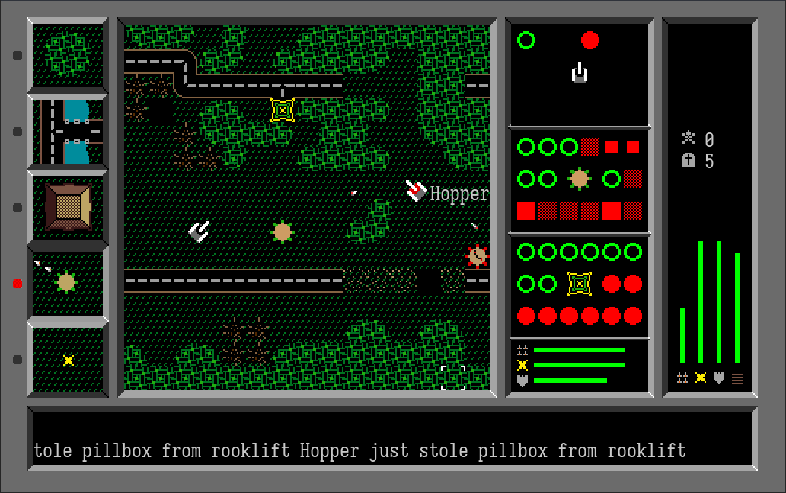
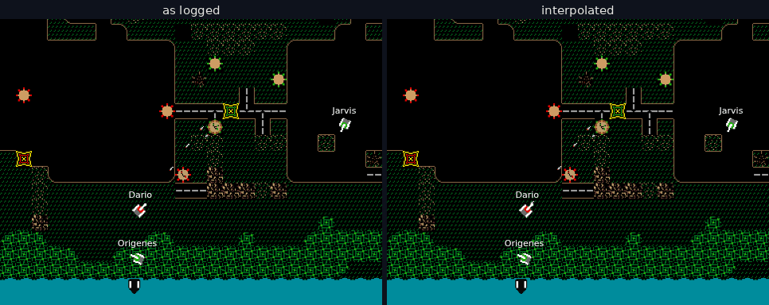
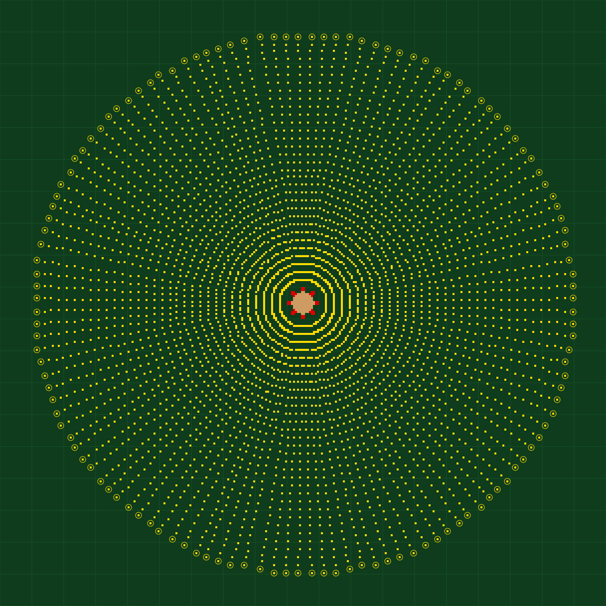
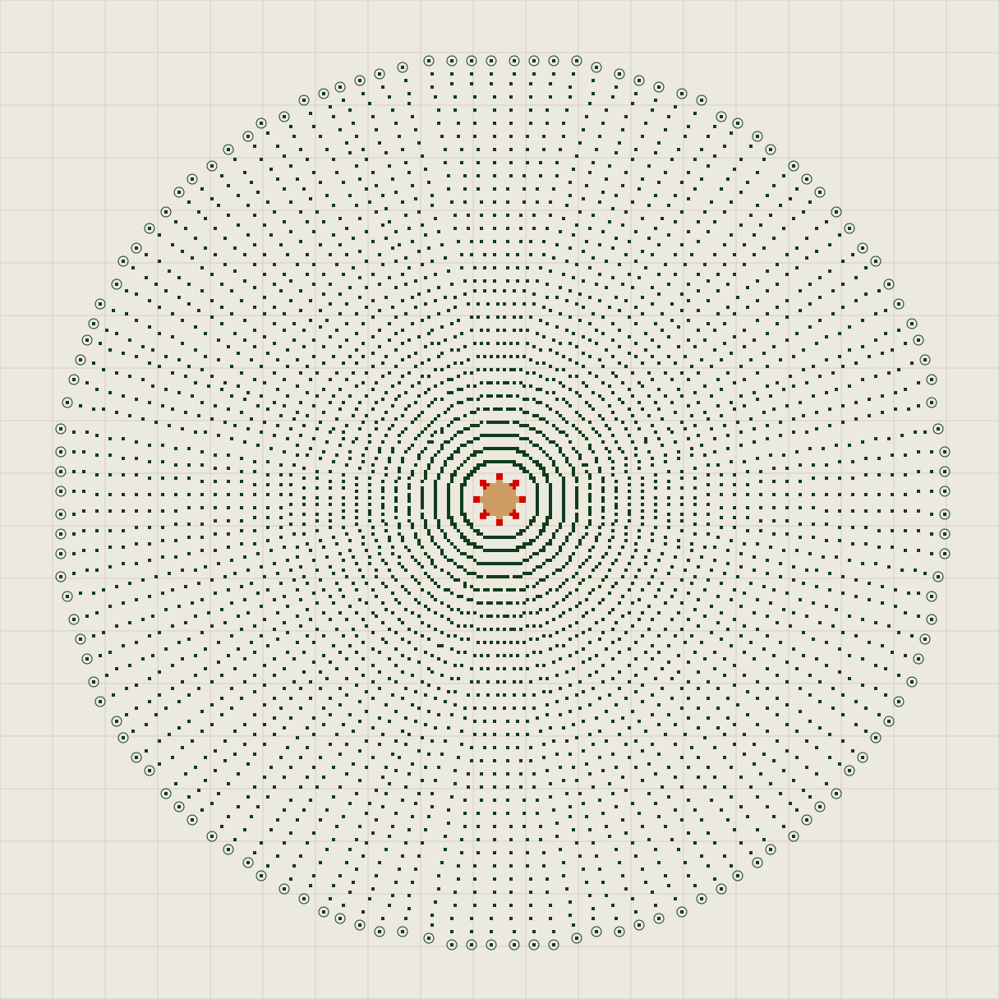
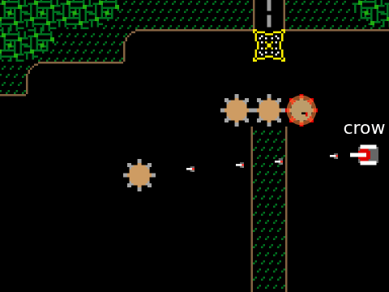
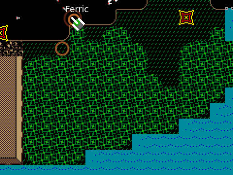
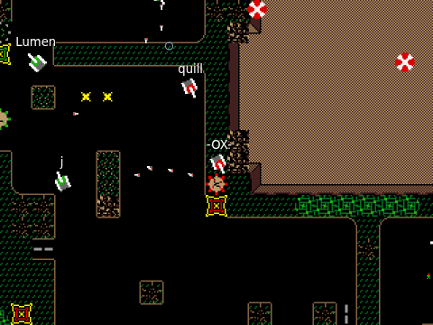

Parsing Bolo replays, after all this time
Bolo and BoloViewer
Long ago, in an age before time itself existed (the 1980s and 90s), there was a man, Stuart Cheshire, who created the greatest video game of all time. He went on to do other good and important things, but this essay is not about him. Nor is it really about the game he created, Bolo, a game featuring player-controlled tanks and automated pillboxes shooting at each other.

Rather, this is an essay about Bolo replays, which Bolo could log to disk, for which there was never an official viewer. In fact, Bolo even encrypts the logs with a simple cipher.
Eventually (around 2000) there came an unofficial viewer called BoloViewer, written by Carl Osterwald, who cracked the encryption and worked out all of the format details. While this functioned well, it was a Mac-only program and also it's hard to get a copy these days. So when the Bolo community suggested a new replay viewer be created, I did the only sane thing and turned to Claude (and to a lesser extent, Sol).
Thankfully, enough documentation about Bolo survived (thanks to Carl, Rob Keogh, and John Morrison!) to enable parsing of the replays. The battle was everything else.
Bolo's network architecture
While a typical multiplayer game might use a server/client hub-and-spoke network structure, Bolo did not. Bolo used a ring topology, with updates travelling one-way around the ring.
With a traditional server, the replay would be created by the server and would be a perfectly authoritative account of what happened. But for Bolo, there is no server.
So who's doing the simulating? Well, each client simulates the effects of its own actions (e.g. its own tank shots) as well as the effects of shots fired by pillboxes towards its own tank.
So what even is a replay? A Bolo replay us just a log of incoming and outgoing network packets.
This causes problems for us. Firstly, packets might be generated late and so the event timings might not match the natural cadence of the simulation. Secondly, many events contained in the packets require a perfect understanding of Bolo's physics to know what effects they were supposed to have on the world. And thirdly, in order to save bandwidth, the information we get is the bare minimum needed to update the world.
Interpolation
The logged network packets contain information about shell positions, but no identifying information about what shell at time T is the same shell at time T+1. When displaying network shots in-game, Bolo didn't try to interpolate them or join up their paths, just displaying their last known position. Can we do better? Can we turn the thing on the left into the thing on the right?

Well, can I do this? No, I cannot do this. It's like trying to take a bunch of primary radar returns and convert them into coherent objects, except instead of a couple of planes there are dozens of shells flying around, often overlapping. This is above my paygrade. Claude, however, could do it. And oh boy, were the required systems complicated! According to Claude's own description:
The shell interpolator is a forensic reconstruction engine for anonymous projectiles: a quantisation-aware state estimator driven by a bit-exact simulator of Bolo's integer shell physics, reverse-engineered from empirical data; a 256-bradian discrete-trajectory hypothesis tracker that collapses to exact orbits wherever the origin is pinned; a byte-exact stale-restatement linker; a margin-gated mutual-best identity matcher; a same-origin lockstep roster arbiter; a sender-clock reader that dates each record pair off the sender's own shells — the tank's common advance, or a pill's passed election — with a terminal's nearest explainer the one doubtful voter, and lends the composed clock to the joins and to the drawing of late records; a conservative chain stitcher; a min-cost maximum-flow resolver for forced residual origins, continuations, and fates; and a constant-velocity smoother with late-stamp head correction, arrival-retimed splashes, and seamless birth-and-fall segments.
Good grief! If you want to know more, I suggest you point your AI of choice at motion.js, the project's main interpolation source code. I certainly can't explain it.
Upon reading this essay, Claude complains that I've made the interpolator sound like magic. But that's certainly how it seems to me. What's the saying about sufficiently advanced something something?
Shell simulation science
In order to interpolate better, it would be useful to understand the exact physics of the shell simulation. I had a corpus of around 450 Bolo logs, enough to let Claude do one of his favourite things, Data Science! While the position of a tank is never known precisely due to rounding in the data, pillboxes are placed only at the centre of tiles. Therefore, it's possible to look at shots from pillboxes and determine exactly where the simulation was actually putting those shots. This was done.


For whatever reason, pillboxes can only fire in 128 directions (not 256 as one might expect). With the data above, Claude was able to figure out the exact simulation algorithm. As a result of this and other science, the interpolator has a success rate of about 99.8% on real data, i.e. 99.8% of the time, it's able to say which shell is which, when moving forward a frame.
Around this time, we discovered additional complications: shells are sent in lists of up to four at a time, with entries 1-3 being given as offsets from the previous entry. And due to rounding, errors accumulate, i.e. the claimed position of the shell in index 3 could be out by as much as 3 pixels per axis... oh good. Due to this sort of thing, the interpolator became more of a best-effort hypothesis tester, rather than an exact matcher. Progress was measured with constant testing on the real replay corpus, not only for how much shell matching was being done, but also whether that matching made any sense...

Tree clearance
Shell interpolation was maybe 80% of the battle. As an example of the rest of it, consider this: when a tank gets destroyed, its burning wreckage travels a short distance, obliterating trees along the way.

Which trees? The replay doesn't tell us, so to display things correctly we have to figure that out. More data science! This was relatively easy - new trees can spring up where no tree exists, and the replays do contain those events, so just generate a list of candidate tree-clearance shapes, and make sure trees only regrow over trees we marked as destroyed. With a corpus of 450 replays, there's enough data to provide the correct shape: a 15 by 15 pixel box.
Pillbox drops
As another example: pillboxes can be killed and picked up by tanks, to be rebuilt later. But if the tank dies while carrying them, they will be dropped.

In the case above, a whole bunch of pillboxes are dropped. Where? The replay doesn't say. But it does tell us what tanks picked them up, and when. So again: science! Check where the collecting tanks were when they picked these up. The model turned out to be a simple square spiral, blocked by terrain as needed.
Tracking down bugs
While working on interpolation, some entity (I forget who) noticed that some recorded this-pillbox-is-shooting events were far away from any shell. After doing, yes, data science on the replay corpus, we figured out that shots just west of due north were being recorded as having come from the wrong pillbox. We actually ended up consulting disassembled code for this one and found out why: the event packs the pillbox ID and the shot direction into one byte, four bits each. The direction nibble is computed from Bolo's 256 internal directions by adding 8 and dividing by 16, and for the eight headings just west of north (directions 248 to 255) that gives 16, which overflows into and corrupts the pillbox number.
713E: MOVEQ #0,D6 ; clear D6 7140: MOVE.B 4(A2),D6 ; load a byte (zero-extended, thanks to the MOVEQ) 7144: ADDQ #8,D6 ; add 8 7146: ASR #4,D6 ; arithmetic shift right by 4 = divide by 16
We almost never looked at disassembler output because (A) it felt kind of dirty, and (B) Claude's "cyber" classifiers kick in if they see too much of this stuff. But we did on this occasion, and it led to more data science. When the two halves of the byte were OR'd together, this mechanism would mean only IDs that are even numbers (which would naturally have a zero in the rightmost bit of the ID nibble) would be corrupted. Was this true? We checked, it was.
Chat redaction
I wanted to store some of the replays in the repo, as examples and for testing purposes. But there were certain privacy issues. Solution: have Claude rewrite the chat history! Given the constraint that the messages should remain exactly the same length, Claude produced (imo) some of his best fictional work.
What did AI bring?
Claude reckons that, to get a freelancer to make a crude replay viewer, before the AI era, would have cost maybe $5,000 to $20,000. To get it working at the level our viewer does, with all the highly sophisticated interpolation, might require a crack team of experts at a cost of $500,000 or so! Is Claude overselling the value of his work? Possibly, I dunno. But in any case, it actually cost $200 and took less than a month in my spare time (a version without interpolation was working within an hour, everything after that was refinement) for:
- ~10,000lines of viewer code, with 3,000 lines of comments
- ~14,000lines of tool code for data science experiments
- ~4,000lines of testing code
The code, although it was certainly beyond me, was not Claude and Sol's only contribution. They also conducted analysis of 450 or so genuine replays, iterating and testing our code against real data. Like so many coders before me, I had become a manager. Thankfully the staff were better at this stuff than me.